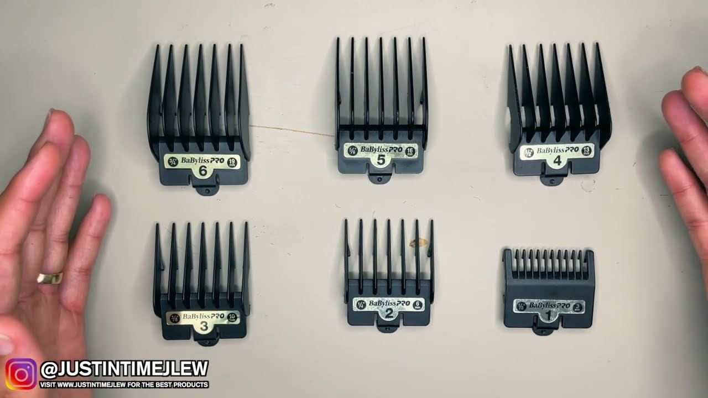

Clipper Grades by Pattern: Guard Science for 360s, 540s and 720s
Ask ten wavers what guard they cut with and you will get ten answers and no explanations. Guard choice is one of the most technical decisions in waving — it sets how much of your trained pattern survives the cut, how deep the waves read, and how long until the next cut. JustinTime (@JustinTimeJLew) covers guard fundamentals in the video below; this guide maps the grades onto each pattern so you can walk into any barbershop speaking the language fluently.
What the numbers actually mean
A guard number is a length, not a style. Each number adds roughly an eighth of an inch of hair left standing — a number 1 leaves about an eighth of an inch, a number 2 about a quarter, a number 3 about three-eighths, and so on. The clipper lever then fine-tunes between numbers: lever open cuts slightly longer, lever closed cuts slightly shorter, giving you the half-steps barbers use constantly.
Cutting with the grain — in the direction your waves flow — preserves the pattern's length and depth. Cutting against the grain takes the hair shorter and cleaner but can scalp a developing pattern. For wavers, with-the-grain is the default; against-the-grain is a deliberate choice for specific looks, never an accident.
Grades by pattern
For 360s, most trained wavers live between a 1.5 and a 3 with the grain, depending on texture: coarse hair reads deep even at shorter grades, while fine hair needs the 2.5-to-3 range to keep its waves visible. For 540s, stay a half-grade longer than your 360 instinct — the diagonal pattern needs length to complete its longer curves, and cutting to a 360 length can erase the sides entirely.
720s are the most length-hungry of all. The full-spin pattern needs a genuine wolf to develop and usually cuts best in the 3-to-4 range with the grain, keeping the crown area longest of all. At any pattern, the crown and the weakest panel should be cut a half-grade longer than the rest — your barber blends the difference invisibly.
Building your personal grade map
Stop copying other wavers' numbers — their texture, growth rate and pattern depth are not yours. Instead, run one controlled experiment: photograph your pattern the day before a cut and three days after, at two or three different grades across successive cuts, and keep notes. Within three cuts you will own a personal grade map no forum can give you.
Bring that map to the barber in plain language: the grade, the lever, the direction, and the areas to leave longer. A waver who can say '2.5 with the grain, lever open on the crown, taper the edges only' gets the same cut from any skilled barber in any city — and that consistency is worth more than any single great haircut.
Watch: JustinTime explains clipper guards from the ground up — the vocabulary this guide builds on
Video: “360 Waves: Understanding Clipper Guards for Beginners (BabylissPRO GoldFX)” by JustinTime (@JustinTimeJLew) · Watch on YouTube
Shop the gear
Everything in this guide runs on the right gear: a durag that holds compression without slipping, a cap that stays put, and fabric that treats your hair right. The durag.store launch lineup is built to that standard — dual-layer construction, long tails, and stitching made to survive the routine. Join the launch list and use code GOLDSTANDARD for 15% off your first order.
Keep learning
- How to Cut 360 Waves: The Barber-Chair Guide for Wavers — Intermediate · Barber & Cuts
- What to Tell Your Barber: The Exact Words That Protect Your Waves — Intermediate · Barber & Cuts
- Barbershop Day: The Before, During and After That Protects Your Cut — Basic · Barber & Cuts
Sources: Video — “360 Waves: Understanding Clipper Guards for Beginners (BabylissPRO GoldFX)” by JustinTime (@JustinTimeJLew), youtube.com. Guide written by the durag.store Wave Lab.